0. How to use this guide
This is a 3-hour, hands-on class on the AI-assisted development workflow. You bring your own laptop and pick the persona that matches your job: engineer, pm, designer, data-scientist or accountant. Each persona works on exercises built for that role, in its own language and tools (see Pick your track). We do three labs:
- Lab 1: Onboarding. Run
/set-persona add <role>and/setup-stack <role>in the course repo. - Lab 2: Architect + two sessions. Run
/architect <role>on your track’s first exercise inexercises/<role>/, then drive two/start-session <role>→/next-sessioncycles. - Lab 3: Adapt to your real repo. Run
/detect-stackon an existing codebase you already have at work.
This class teaches the workflow. Basic concepts explains hooks, MCP servers, subagents and skills so you know what they are and where they live in this repo. We do not build them in the labs. Writing your own is an advanced topic for a later session.
Each section has a short concept, a small diagram, and either a demo block (instructor runs it) or a lab block (you run it). When you see ⏱ Lab, stop reading and do it on your laptop.
0.5 Basic concepts
The core terms you will hear all class. Come back here whenever a term is unclear. Each one has a plain explanation, a small diagram, and the real path in this repo.
Prompt
The prompt is everything the model reads, not just what you type. Cursor adds the rules that apply, your open files, anything you @ mention, and .cursor/context.md. Better inputs give better answers, so most of this class is about controlling what Cursor adds.
In this repo: .cursor/context.md is the project memory every command reads first.
Context window
The context window is the model’s working memory for one chat. It has a fixed size. Rules, files the agent reads, your messages, its replies and tool output all fill it. When it is full, something has to go.
In this repo: one session per chat. /start-session opens it, /next-session closes it.
Compaction (summarization)
When a chat gets long, Cursor summarizes the older turns to make room. The summary keeps the gist and drops exact details: file names, numbers, small decisions. Anything you need tomorrow must live in a file, not in the chat.
In this repo: /next-session writes workspaces/<role>/plans/transitions/latest.md, and .cursor/context.md persists between chats.
Rule
A rule is a standing instruction in a .mdc file that Cursor adds to the prompt for you. alwaysApply: true adds it to every chat. globs adds it only when matching files are in context.
In this repo: /set-persona copies personas/<role>/rules/*.mdc into .cursor/rules/<role>/ and scopes each one to globs: workspaces/<role>/**.
Command
A command is a saved prompt in a Markdown file. You type /name and Cursor sends that file’s text as the prompt. Use one for any multi-step job you repeat.
In this repo: .cursor/commands/ holds set-persona.md, setup-stack.md, architect.md, start-session.md, next-session.md, detect-stack.md, undo.md and more.
Skill
A skill is a folder with a SKILL.md file (instructions plus a short description) and any helper files. You call a command yourself. With a skill, the agent reads the descriptions and loads the skill only when your task needs it. Cursor reads skills from .cursor/skills/<name>/SKILL.md.
In this repo: no skills. Commands plus role-scoped rules do the same job here.
Why commands and skills
Typed prompts drift. Two people ask for the same thing in two ways and get two results. A command or skill is one file in git: the same steps every time, shared by the whole team, no retyping.
In this repo: every step of the class is a command in .cursor/commands/, so every student runs identical steps.
Hook
A hook is a script Cursor runs on an agent event. beforeShellExecution runs before a terminal command and can block it. afterFileEdit runs after the agent edits a file. stop runs when the agent finishes. Hooks are code, so they run every time, unlike an instruction the model can forget.
In this repo: /set-persona merges personas/<role>/hooks.json into .cursor/hooks.json, wrapping each script in .cursor/scripts/_scope.sh so it only fires for that role.
Agent and subagent
The agent is the model running in a loop: read, think, call a tool, check the result, repeat until done. A subagent is a helper the agent hands a side task to. It works in its own context window and returns a short summary, which keeps the main chat clean.
In this repo: subagents live in personas/<role>/agents/*.md (for example personas/engineer/agents/verifier.md) and are copied to .cursor/agents/.
MCP server
An MCP server is a plug that gives the agent new tools or data, like a browser, a database or current library docs. Cursor starts the servers listed in .cursor/mcp.json and offers their tools to the agent.
In this repo: /set-persona merges personas/<role>/mcp.json into .cursor/mcp.json. The engineer persona adds playwright and context7.
Persona and stack
A persona is your role and everything that comes with it: rules, commands, subagents, hooks, MCP servers. A stack is your tools: language, framework and the rules for them. Two commands install them, and both write into your role’s workspace.
In this repo: personas/<role>/persona.yaml defines each role. Stacks live in stacks/. Details in section 3.
The whole picture
You start with a prompt or a command. The agent loops, using rules and context.md for guidance and tools and MCP servers to act. Hooks fire around each step. The output ends with a handoff doc that seeds the next chat.
In this repo: the SDD pipeline in section 2 runs this loop once per session.
1. What is Cursor?
The pain it solves
Without a workflow, AI-assisted coding looks like this: you open a chat, type a vague request, paste back the code, fix what didn’t compile, ask again. Every conversation starts from zero. The AI does not know your stack, your conventions, your phase of work, or what you did yesterday.
Cursor is an AI-native IDE (a fork of VS Code) that fixes this by giving the AI a project context (a file called .cursor/context.md) and a workflow of slash commands that move you through stages: pick a role, pick a stack, design the work, execute it in sessions, review, adapt.
What it is not (in this class)
Cursor has advanced features: hooks, MCP servers, subagents, skills, automation. Basic concepts explains what each one is, and your persona installs some of them for you. We do not build or customize any of them in the labs. The workflow is the foundation the advanced features rest on. Build the foundation first.
Cursor turns ad-hoc AI chats into a disciplined, repeatable software-development workflow by remembering who you are, what you’re building, and where you stopped.
2. The SDD pipeline
Everything in this class hangs on one diagram: the Spec-Driven Development (SDD) pipeline. Memorize it now: every command you learn is a station on this line.
The spine
/set-persona add <role> → /setup-stack <role> → /architect <role> exercises/<role>/01-.../README.md (engineers start at 00-skeleton)
→ (review gate) → /start-session <role> → in-session commands → /next-sessionEvery persona runs the full spine, including /setup-stack. Each role has at least one stack. Some stacks install nothing on your machine (the PM’s pm-prd-markdown, the accountant’s sheets-accounting); they still add the rules and templates for that role. Several personas can be active in one repo; you run the spine once per role.
Two enforcement rules
The pipeline is enforced by two rules baked into every command. This is not advice: the commands literally stop if these rules are violated.
| Command | Rule A: persona gate | Rule B: next pointer | What it produces |
|---|---|---|---|
| /set-persona | (adds the persona) | → /setup-stack <role> |
## Persona: <role> block in .cursor/context.md, pack in .cursor/, workspaces/<role>/ |
| /setup-stack | Stops if no persona | → /architect <role> |
.cursor/rules/<role>/stack-*.mdc + .cursor/stacks/<role>.manifest.json |
| /architect | Stops if no persona or no stack | → /start-session <role> |
workspaces/<role>/plans/sessions/*.md + interface-contract.md + skeleton |
| /start-session | Stops if no persona, stack or plan | → (use persona spokes, then /next-session) |
Work in workspaces/<role>/: code, PRDs, components, notebooks, workpapers |
| /next-session | Stops if no persona | → /start-session <role> (or /architect <role> at phase boundary) |
Transition doc for next time |
Every command on the spine refuses to run without a persona. There is no “default engineer” fallback. If you skip /set-persona, everything else stops with ⚠️ No persona configured. Run /set-persona first.
3. Personas, stacks, and architecture shapes
The pipeline is parametric. The same five commands work for very different jobs because three knobs configure them: persona (who you are), stack (what tech you use), and architecture shape (what the output looks like).
The 5 personas
| Persona | For | Stacks | In-session spokes |
|---|---|---|---|
engineer | Backend / API / service developers | 6, one per language | /engineer-tasks, /engineer-implement, /code-review |
pm | Product managers writing PRDs | 1 (markdown, nothing to install) | /pm-decompose, /pm-validate, /pm-report |
designer | UI designers: tokens, components, screens (no Figma needed) | 1 (React + tokens) | /designer-extract, /designer-compose, /designer-iterate, /designer-handoff |
data-scientist | Notebook + experiment + MLOps | 5 | /ds-explore, /ds-experiment, /ds-validate, /ds-handoff |
accountant | Reconciliations, flux analysis, journal entry testing, close | 2 (spreadsheet or Python) | /acct-reconcile, /acct-variance, /acct-je-test, /acct-close-handoff |
The stack library
Every persona picks from a curated library. The first stack in each list is the default. If your language isn’t there, /setup-stack offers a new option that scaffolds a custom stack from stacks/blank/.
- Engineer:
python-fastapi,go-gin,go-grpc,java-spring,node-express,node-nestjs. Pick the language you use at work. The engineer labs are graded by language-neutral Hurl HTTP tests, so a Java developer builds the same Blog API in Spring. - PM:
pm-prd-markdown - Designer:
designer-react-tokens - Data scientist:
python-datascience,python-mlops,python-spark,python-dbt-snowflake,r-tidyverse - Accountant:
sheets-accounting(default, spreadsheet-first, no code) orpython-accounting
Architecture shapes
The stack determines the shape of what /architect produces. This is why the same /architect command can plan a REST API today and a Spark pipeline tomorrow.
| Stack family | Architecture shape | Interface contract is… |
|---|---|---|
| python-fastapi, go-gin, java-spring, … | REST API | OpenAPI routes + data model |
| go-grpc | gRPC Service | .proto service + message types |
| python-spark, python-mlops | Data Pipeline | Job stages + schema + medallion layers |
| python-dbt-snowflake | Analytics Model | Staging/mart tree + source defs |
| r-tidyverse, python-datascience | Notebook / Experiment | EDA sequence + models + metrics |
| pm-prd-markdown | PRD Workspace | PRD outline: problem, goals, users, epics, NFRs, success metrics |
| designer-react-tokens | Design System | Token set + component inventory + screen layout |
| sheets-accounting, python-accounting | Close Workbook | Source files, reconciliation and analysis steps, output reports, tie-out points |
Pick your track
Each persona does exercises that fit its role, in its own language and tools. Nobody builds someone else’s project. The non-engineer tracks share one fictional company, Northwind Co., and one theme (employee expenses) on shared synthetic data, so no company systems or documents are needed. The engineer track keeps the Blog API labs, built in your own stack.
| Persona | Stacks (default first) | Exercises in exercises/<role>/ | What you need installed |
|---|---|---|---|
engineer |
python-fastapi, go-gin, go-grpc, java-spring, node-express, node-nestjs |
The Blog API labs, built in your stack. Graded by language-neutral Hurl HTTP tests. | Your language toolchain (JDK + Maven, Go, Node, or Python) and Hurl |
pm |
pm-prd-markdown |
1. Raw notes to PRD. 2. Fix a flawed PRD. 3. RICE prioritisation. | Nothing beyond Cursor |
designer |
designer-react-tokens |
1. Brand guide to tokens. 2. Expense claim components. 3. “My claims” screen + fix a flawed component. | Node 20+ (no Figma needed) |
data-scientist |
python-datascience, python-mlops, python-spark, python-dbt-snowflake, r-tidyverse |
1. EDA on claims data with seeded issues. 2. Expense category model with a leakage trap. 3. Duplicate and policy-violation detection. | Python 3 (or R for r-tidyverse) |
accountant |
sheets-accounting (spreadsheet-first, no code), python-accounting |
1. October bank reconciliation. 2. Flux analysis (flag moves over $10k AND 10%). 3. Journal entry testing + close memo. | Excel or Google Sheets (Python 3 only for python-accounting) |
exercises/capstone/ takes one feature through four roles: the PM writes it, the designer builds the screen, the data scientist checks the data, the accountant ties out the numbers. Each persona works in its own workspace and hands off through it. Engineers stay on the Blog API track.
Several personas, one repo
You can wear more than one hat in the same repo. Each persona gets its own workspace, rules and hooks, so a PM’s rules never fire on engineering code.
/set-persona add engineer # first role
/set-persona add pm # a second role; nothing already installed is removed
/set-persona list # active personas, their stacks and phases
/set-persona remove pm # remove one role; workspaces/pm/ is kept| Piece | Where | Why |
|---|---|---|
| Persona contract | personas/<role>/persona.yaml | Workspace, stacks, in-session commands, quality gate. Every command reads it |
| Work | workspaces/<role>/ | Plans, code, data and docs for that role only |
| Rules | .cursor/rules/<role>/ | Scoped by glob to workspaces/<role>/** |
| Hooks | .cursor/hooks.json through .cursor/scripts/_scope.sh | Edit hooks run only for that role’s files; stop hooks only for the role whose session is open |
| Install record | .cursor/personas/<role>.manifest.json, .cursor/stacks/<role>.manifest.json | Lets /undo remove one role cleanly |
| Project state | .cursor/context.md | ## Active Personas, then one block per persona: stack, shape, phase |
Lab 1: Onboarding ⏱ 25 min
Pick the persona and stack that match your real job (see Pick your track). Run them in the course repo. End with your role listed in .cursor/context.md, a stack installed for it, and a workspaces/<role>/ folder (empty plans/, plus the stack’s templates and examples) ready for Lab 2.
Steps
- Open a terminal in your copy of the course repo (the folder with
personas/,stacks/andexercises/). The commands read those folders, so work inside this repo. - Open the folder in Cursor:
cursor .(or use File → Open Folder). - Open the chat panel with Cmd+L so you can type slash commands.
- Run
/set-persona add <role>with the persona for your job:engineer,pm,designer,data-scientistoraccountant. Plain/set-personashows the menu. - Run
/setup-stack <role>. Everyone runs it. Pick the stack from your track (Enter takes the default), ornewif your language isn’t listed. Engineers: pick the language you use at work. - If
workspaces/<role>/already has files,/setup-stackwill detect them and ask: overwrite, skip templates, or merge per-file. Pick “skip templates” if you just want rules; pick “merge” if you want to see each conflict. - Optional: add a second role with
/set-persona add <other-role>and check both with/set-persona list. - Open
.cursor/context.md. Confirm## Active Personaslists your role and the## Persona: <role>block hasStackandArchitecture Shapefilled in.
Checkpoint
grep "Active Personas" -A1 .cursor/context.mdshows your rolegrep -A3 "Persona: <role>" .cursor/context.mdshows your stack and shapels .cursor/personas/<role>.manifest.json .cursor/stacks/<role>.manifest.jsonboth existls .cursor/rules/<role>/shows persona rules plusstack-*.mdcrules- Open any file under
workspaces/<role>/and Cursor attaches that role’s rules (they are scoped by glob to that folder)
Run /undo all. It reads the manifests and removes every file that /set-persona and /setup-stack wrote. Then start over.
4. The 6 commands you need
Six commands. Five on the spine + /detect-stack for brownfield. That’s the whole class. Everything else is optional or persona-specific.
/set-persona
What it does: /set-persona add <role> installs a persona pack (commands, agents, rules, hooks, MCP config) into .cursor/. Rules go to .cursor/rules/<role>/, scoped by glob to workspaces/<role>/**. Hooks are wired through .cursor/scripts/_scope.sh so they fire only for that role. It creates workspaces/<role>/ and adds the role to ## Active Personas in .cursor/context.md. Run it again to add another role; list and remove <role> do what they say.
When: first thing. Always. There is no escape hatch.
Output: persona files installed; .cursor/personas/<role>.manifest.json written so /undo can reverse it.
/setup-stack
What it does: /setup-stack <role> shows the stacks listed in that persona’s persona.yaml, lets you pick one (or create a new one from stacks/blank/), copies the stack’s rules into .cursor/rules/<role>/ and its templates into workspaces/<role>/, and writes Stack + Architecture Shape into the ## Persona: <role> block.
Smart bit: if workspaces/<role>/ already has files, it detects that and asks how to reconcile: overwrite, skip templates, or merge per-file. Your existing work is never blindly overwritten.
Every persona runs it. PM and accountant (sheets-accounting) stacks install no software; they still bring the rules and templates for the role.
/architect
What it does: /architect <role> exercises/<role>/01-.../README.md (engineers start at 00-skeleton) turns an exercise brief (or a one-line idea) into a full plan inside workspaces/<role>/plans/: sessions/session-overview.md, one session file per phase, an interface-contract.md (OpenAPI, proto, PRD outline, token set, close workbook steps, depending on shape), and a walking skeleton in the right places.
Gated 3-phase flow:
- Design: produce all planning docs, no code.
- ⛔ Human review gate: you read the plan and approve before any code is written.
- Scaffold: only then does the skeleton get built.
This means /architect never ships code you haven’t signed off on. We’ll go deeper in Section 5.
/start-session
What it does: /start-session <role> loads that persona’s stack, rules, plan and last session’s state, and marks the session as open for that role. Asks for today’s session goal. Tells you which in-session spokes you have (they come from persona.yaml).
Spokes are persona-specific. An engineer gets /engineer-tasks, /engineer-implement and /code-review. A PM gets /pm-decompose, /pm-validate, /pm-report. See Section 6 for the full map.
/next-session
What it does: wraps up today. Runs the persona’s quality gate from persona.yaml (test suite for engineer, token-validator for designer, gap-detector for PM, experiment tracker and /ds-validate for data-scientist, tie-out-checker and controls-checker for accountant). Writes a transition doc to workspaces/<role>/plans/transitions/, including the exact spokes to call next time.
It points you back to /start-session <role> (or to /architect <role> when the last phase just finished). The loop is closed.
/detect-stack
What it does: the brownfield entry point. /detect-stack <role> <path> scans your existing code (default path: workspaces/<role>/), figures out the language, framework, tests and style, and matches it against the stack library. It writes Stack + Architecture Shape into the ## Persona: <role> block, puts stack rules in .cursor/rules/<role>/stack-*.mdc that mirror what is actually there, and writes the same .cursor/stacks/<role>.manifest.json as /setup-stack, so /undo stack <role> works.
When to use: instead of /setup-stack, when you already have code and you want the AI to learn your patterns rather than impose a template.
5. /architect: the gated 3-phase flow
This is the most important command in the class. It is also the easiest to misuse, so it has guardrails.
Why three phases?
The old failure mode of AI architects: ask “build me a task tracker,” receive 40 files of code in 30 seconds, discover three days later that the data model is wrong. By that point, refactoring is more expensive than starting over.
Gating the design phase forces a moment where you, the human, read what the AI plans to build before it builds it. Catching a bad design in a markdown file is free; catching it in code is not.
Phase 1: Design
The AI produces, inside workspaces/<role>/:
plans/sessions/session-overview.md: the phase breakdown and session listplans/sessions/session-1-phase-0.md: the skeleton session planplans/sessions/session-N-phase-X.md: one file per feature phaseplans/interface-contract.md: the contract for your stack’s shape (OpenAPI, proto, DAG, PRD outline, token set, close workbook steps…)
It also runs a self-audit step: re-reads its own output, diffs the manifest, checks that every promised file actually exists, and lists the architectural risks it sees. You see this audit before the gate.
Phase 2: Human review gate
Nothing else happens until you reply “approved” (or “looks good”, “proceed”). Read the plan, push back if anything is wrong, ask for revisions. The AI cannot proceed to scaffold without your approval.
Phase 3: Scaffold
After approval, the AI writes the walking skeleton: the minimum that matches the interface contract, with stubs and no final content. Then it runs the shape’s skeleton check: every stub route answers (engineer), every PRD heading is present (pm), the token JSON validates (designer), the notebook runs top to bottom (data-scientist), the tie-out stubs run (accountant). The first /start-session fills the stubs in.
If you already have a written plan, point /architect at it. In this class the plan is your exercise brief: /architect <role> exercises/<role>/01-.../README.md (for example /architect pm exercises/pm/01-notes-to-prd/README.md). It will extract requirements instead of inventing them, so you skip the “ask 10 clarifying questions” back-and-forth.
6. The session loop
Once /architect has produced a plan, you live in a loop:
Persona spokes
Inside one session, you use the spokes installed by /set-persona. These are not new spine commands: they are tools you call while inside a /start-session → /next-session cycle.
| Persona | In-session spokes | What each does |
|---|---|---|
| engineer | /engineer-tasks/engineer-implement/code-review |
Decompose session goal into TDD-ordered tasks; drive red → green → refactor on one task at a time; review the diff against the stack rules |
| designer | /designer-extract/designer-compose/designer-iterate/designer-handoff |
Pull tokens from a token JSON or screen spec (or a Figma frame, optional); build components from tokens only; apply review feedback; produce dev-ready spec |
| pm | /pm-decompose/pm-validate/pm-report |
Split a PRD epic into INVEST stories; verify ACs; produce sprint status summary |
| data-scientist | /ds-explore/ds-experiment/ds-validate/ds-handoff |
EDA on a dataset; tracked-metrics experiment run; check seeds/leakage/baselines; model card + serving spec |
| accountant | /acct-reconcile/acct-variance/acct-je-test/acct-close-handoff |
Match bank lines to GL lines and list unmatched items; budget vs actual and month-over-month flux with explanations; test journal entries for duplicates, weekend postings, round amounts, self-approval; write the close memo with tie-outs and open items |
Spine = the line of stations (set-persona → setup-stack → architect → sessions). Spokes = tools that come out of one station. You walk down the spine once per project. You use spokes many times per day inside the session loop.
Lab 2: Architect + two sessions ⏱ 60 min
Take your track’s first exercise from exercises/<role>/, run it through /architect <role>, approve the plan, then drive two /start-session <role> → /next-session cycles. End with a walking skeleton + at least one finished piece of work.
Your exercise
Start with exercise 01 of your track. Each folder has a README.md brief, the inputs, and the checks you are graded against.
- Engineer: the Blog API labs in
exercises/engineer/, built in the stack you picked (Spring, Gin, gRPC, Express, NestJS or FastAPI). The Hurl tests are the same for every language. - PM:
exercises/pm/, starting with raw meeting notes to a PRD for Northwind’s expense claims. - Designer:
exercises/designer/01-brand-to-tokens/: Northwind’s brand guide to a token set, then claim components. - Data scientist:
exercises/data-scientist/, starting with EDA on the claims data (it has seeded issues to find). - Accountant:
exercises/accountant/, starting with the October bank reconciliation.
Steps
- Run /architect. Point it at your exercise brief:
/architect <role> exercises/<role>/01-.../README.md(engineers start at00-skeleton). It runs in plan-extraction mode and writes everything intoworkspaces/<role>/. - Wait for Phase 1 to finish. The AI produces
workspaces/<role>/plans/sessions/*.md,workspaces/<role>/plans/interface-contract.md, and a self-audit. Nothing is built yet. - READ THE PLAN. Open
session-overview.mdand the interface contract. Does it cover everything in the brief? Are the phases in the right order? Is anything obvious missing? - Approve or push back. Say “approved” (or specifically what to change). Only after approval will Phase 3 build the skeleton.
- Session 1. Run
/start-session <role>. State your goal (usually the first unchecked task in the session file). Use your persona’s spokes from Section 6 (engineer:/engineer-tasks+/engineer-implement; pm:/pm-decompose+/pm-validate; designer:/designer-extract+/designer-compose; data-scientist:/ds-explore; accountant:/acct-reconcile). Stop when one piece of work is done or you’re out of time. - Wrap. Run
/next-session. It runs your persona’s quality gate and writes the transition doc toworkspaces/<role>/plans/transitions/. - Session 2. Run
/start-session <role>again. Use the transition doc’s “Next step” line as today’s goal. Finish the next piece. - Wrap again with
/next-session.
Checkpoint
ls workspaces/<role>/plans/sessions/shows session-overview.md + at least one session filels workspaces/<role>/plans/interface-contract.mdexists- One piece of work passes its check. Engineer: the exercise’s Hurl tests pass against your server. PM: the PRD passes
/pm-validateand the gap-detector. Designer: tokens validate and the component renders in Storybook. Data scientist: the notebook runs top to bottom on a fresh kernel. Accountant: the reconciliation ties out to the source files. - You have two transition docs in
workspaces/<role>/plans/transitions/
Go to exercise 02 of your track, or add a second persona with /set-persona add <role> and try its exercise 01. Teams of mixed roles can start the capstone in exercises/capstone/.
Skipping the human-review gate by saying “ok” without reading. Don’t. The whole point of the gate is to catch design problems while they’re still cheap. Spend a real five minutes reading the plan.
7. Adapting to an existing repo
Real engineers spend more time on existing codebases than greenfield ones. The workflow has a separate entry point for that: /detect-stack.
What changes
/setup-stack <role>→/detect-stack <role> <path>. The AI reads your code and infers the stack instead of you picking from a list. Without a path it scansworkspaces/<role>/.- The detected stack may match an existing library entry (great: you get the prebuilt rules) or it may be custom. For a custom stack it generates rules for your role and asks whether to also save it as a reusable stack under
stacks/{name}/(a clean lowercase-hyphenated name with nodetected-prefix). - Everything downstream is the same.
/architectstill produces session files, the session loop still applies, persona spokes still work.
When to use which
| Use… | When… |
|---|---|
/setup-stack | Empty folder, fresh project. You know the stack you want. |
/detect-stack | Existing repo with code. You want the AI to learn your patterns. |
/setup-stack with merge mode | Existing repo, but you want to also apply library rules and reconcile per-file. |
Lab 3: Adapt to your real repo ⏱ 40 min
Take a real codebase you already work on, install the workflow, run /detect-stack, and confirm the AI now “understands” your repo’s conventions.
Steps
- Pick a repo from your real work. Anything with at least a few files of source code in one primary language. PM, designer and accountant tracks without a code repo: use a folder of your own non-confidential documents (a PRD template, a token file, a workpaper layout), or spend this lab on exercise 02 of your track.
- Copy the course’s
.cursor/,personas/andstacks/folders into that repo (the commands read all three). Don’t commit them yet: you may want to.gitignorethem or move them to a branch. - Open the repo in Cursor:
cursor ., then Cmd+L for chat. - Run
/set-persona add <role>with the persona that matches what you do in that repo. - Run
/detect-stack <role> <path>, where<path>is your code (for example.orsrc/). Let it scan. Read what it reports and answer its questions. - Open the
## Persona: <role>block in.cursor/context.mdand the generated.cursor/rules/<role>/stack-*.mdcrules. Do they correctly identify your framework, your testing tool, your conventions? If not, edit them: the files are yours. The rules are scoped by glob to the path you scanned (for exampleservices/billing/**), so they attach to your real code. - Ask Cursor a question about your real code: “What does
UserService.createdo?” or “Where are tests for the auth flow?” Confirm the answers reference your actual files, not generic guesses.
Checkpoint
- ✅
/detect-stackran without errors and identified at least the language and framework - ✅ The persona block and the generated
stack-*.mdcrules reference real files / patterns from your repo - ✅
.cursor/stacks/<role>.manifest.jsonexists, so/undo stack <role>can reverse it - ✅ Cursor can answer a specific question about real code in your repo
Don’t fight it. Edit the persona block and the generated rules, or run /undo stack <role> and detect again. /detect-stack is a starting point, not a verdict. The files are markdown; rewriting them takes five minutes.
8. /undo: the safety valve
The pipeline writes files. Lots of files: rules, templates, manifests, context. If you want to switch personas, switch stacks, or just start over, you need a clean way to remove everything you installed.
/undo reads the manifests that /set-persona and /setup-stack (or /detect-stack) wrote for one role and deletes exactly those files. Nothing more, nothing less. Other roles stay installed, and your work in workspaces/<role>/ is never deleted.
Three modes
| Command | Reverses… | Use when… |
|---|---|---|
/undo persona <role> | That role’s persona pack (and its stack first) | You no longer need that role in this repo |
/undo stack <role> | That role’s stack rules + templates | You want to swap stacks, e.g. /undo stack engineer to go from java-spring to go-gin |
/undo all | Every stack, then every persona | Start completely over |
Without /undo, switching stacks leaves stale files behind: old rules that contradict new ones, old templates that don’t fit. Manifest-based undo means experimentation is safe. You don’t need it to try another role: /set-persona add data-scientist sits next to your engineer setup. Use /undo stack engineer to try another language, with no residue.
9. What you learned: adapt it at work
You now know enough to take this workflow back to your real job. Here’s the one-page conversion table.
| You learned to… | At work, this means… |
|---|---|
| Pick a persona | Be explicit about which job you’re doing right now. The same person can wear the engineer hat in the morning and the designer hat in the afternoon: add both with /set-persona add, but run one persona per session. Switch with /next-session, then /start-session <other-role>. |
| Pick a stack (or detect one) | Make the AI’s assumptions match your codebase. Greenfield: pick from the library or scaffold a new stack from stacks/blank/. Brownfield: /detect-stack <role> <path> and then edit the persona block and generated rules to match reality. |
Run /architect with a human gate |
Never let the AI ship code from a one-line idea. Always read the plan first. The gate is the cheapest place to catch design problems. |
| Drive sessions with persona spokes | Inside a session, use the spokes for your role: don’t freestyle. Engineer: /engineer-tasks then /engineer-implement. The spokes are what give the AI structure within a session. |
End each session with /next-session |
Always close the loop. The transition doc is what makes tomorrow productive instead of confused. The next /start-session <role> reads it and proposes its “Next step” as the goal. |
Use /undo when things drift |
If your config feels stale, don’t debug it: reset it. /undo all, /set-persona add <role>, /setup-stack <role>. Two minutes, clean slate, and your workspaces are kept. |
Pick one real repo at work. Copy .cursor/, personas/ and stacks/ into it. Run /set-persona add <role> + /detect-stack <role> <path>. Ask Cursor one question about your actual code. If the answer is grounded in real files, you’ve adopted the workflow. The rest follows from there.